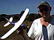
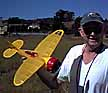
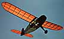

Outdoors with the Marin Aero Club
Here are a few pix from our October 11, 1998 outdoor session.
click any image for a larger view.
|  This first shot is of Jerry Long with his Air Hog. A compressed air powered model available at many toy stores, it is a great model with surprisingly good performance, despite not much of a glide. This picture was taken right after the longest flight of the day, a staggering 56 seconds. While this may not seem like much, most flights were right around 30 seconds. Somehow Jerry hooked some good air, and didn't spiral in. I lost both wings due to the dreaded spiral dive DT. |
| In the FFML Air Hog Postal Contest, this flight ended up second only to Al Lidberg's 59 second flight in an Arizona trash moving thermal. Congrats, Jerry. |
| This is another picture of Jerry, with his rubber powered Cessna CR-3 racer. Built based on a Model Builder plan, It was reduced from 22" to 20" with an all up weight of 30 grams. Not too bad, considering that huge cowl is all wood. The plans show the cowl as a combination of balsa and bond paper, but after repairing it a few times, Jerry replaced it with an all balsa version. He claims it is hard to trim, but other than a little mushing, it looked great in the air, and was gliding just fine.
The initial flight was made with a loop of 1/4", resulting in a near OOS climb. It was a bit nose heavy, but found a soft spot and survived. Current power is a single loop of 0.175, 18-20" long. This provides a nice flight, slowly climbing up to about 50 feet in still air. Jerry was given a bit of a thrill with a 82 second flight that only drifted a couple hundred feet. It was great to watch the sun streaming through the yelow covering on a severe clear day. |
|

 Bay area modelers, look out! Local sculptor Gale Wagner has started building flying models, and they are beauties! Shown at right is a 30" model he designed with a bit of inspiration from the Sig Tiger kit. Dubbed the Iron Horse due to its 80 gram empty weight, it sports a 30" wingspan and seems to fly as if it were the latest in a long line of sucessful designs. Indeed, just a couple flights after the mass launch, he put it up for a flight of 63 seconds which was about all the drift was allowing on the field at that point.
Bay area modelers, look out! Local sculptor Gale Wagner has started building flying models, and they are beauties! Shown at right is a 30" model he designed with a bit of inspiration from the Sig Tiger kit. Dubbed the Iron Horse due to its 80 gram empty weight, it sports a 30" wingspan and seems to fly as if it were the latest in a long line of sucessful designs. Indeed, just a couple flights after the mass launch, he put it up for a flight of 63 seconds which was about all the drift was allowing on the field at that point.
| |
| He also had the unfinished model shown to the left. It started life from the Flyline Monocoupe plans but was changed extensively. The entire nose is original, inspired by " ... a little bit of Silveraire, some Aeronca, some Cub, and a few others as well." The wing is also a departure from the plans, being a mix of the drawings, and "what looks right". Empty weight, with just the prop and rubber to go, is 62 grams with a 32" span. We couldn't resist, and checking the balance was right on, gave it a few test glides. It is a floater, and will hopefully be making it's first powered flights at Moffett next weekend. |
 Thanks to the internet, were were joined by Omi Chandiramani. He found out about the Marin Aero Club through these pages, and came out to see us in action.
Thanks to the internet, were were joined by Omi Chandiramani. He found out about the Marin Aero Club through these pages, and came out to see us in action.
{kind=link}
{kind=link}
{kind=link}
Copyright 1998, Thayer Syme. All rights reserved